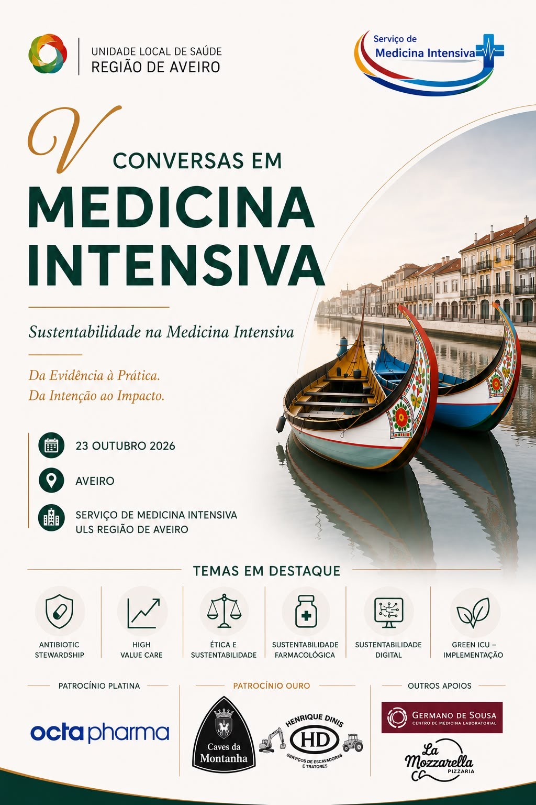

23 Outubro 2026
Sexta-feira
Unidade Local de Saúde Região de Aveiro · Serviço de Medicina Intensiva
V Conversas emSustentabilidade na Medicina Intensiva
Da evidência à prática.
Da intenção ao impacto.

Sexta-feira
Auditório a confirmar
ULS Região de Aveiro